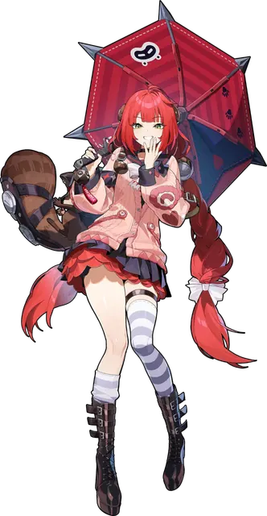
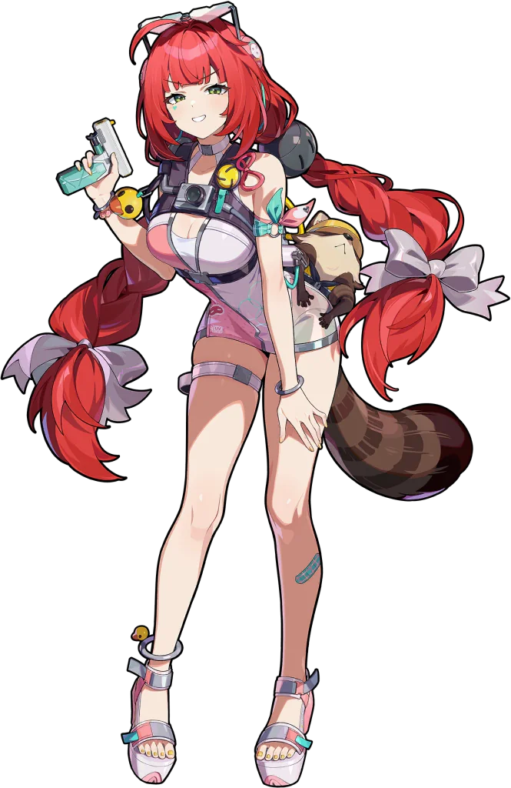

寸法
| 身長 | 162 cm · 5'3.6" |
|---|---|
| バスト | 60.8 cm · 23.9 in |
| アンダー | 50.8 cm · 20 in |
| ウエスト | 40.8 cm · 16.1 in |
| ヒップ | 79.9 cm · 31.5 in |
| 太もも | 46.8 cm · 18.4 in |
| バスト差 | 10 cm · 3.9 in |
| ブラサイズ | UK 20D · US 20D · EU 41E |
比率
| ウエスト / ヒップ | 0.511 |
|---|---|
| ウエスト / 身長 | 0.252 |
| ウエスト / 太もも | 0.872 |
| 太もも / 身長 | 0.289 |
| 太もも / ヒップ | 0.586 |
| バスト / 身長 | 0.375 |
| ヒップ / 身長 | 0.493 |
名簿内パーセンタイル
48名の実寸cm値のパーセンタイル。身長は頭頂ベース。0＝最小、100＝最大。
体型の読み
浮波柚葉は162cm（5'3.6"）で、ロスター平均とほぼ同じくらいです。バストは60.8cm（UK 20D）で、ロスター平均とほぼ同じです。ウエストは40.8cm（ウエスト対身長0.25）で、ロスターでも細めです。そこから平均的なヒップ（79.9cm）に、平均的な太もも（46.8cm）が続きます。太もも周囲はロスター中位です。バスト/ウエスト1.49、ヒップ/ウエスト1.96、バストとヒップのバランスは76%。全体はバランス型シルエットで、ヒップのほうがやや存在感がありますです。
分類: ウエスト くびれ · ヒップ 平均的 · 太もも 平均 · シルエット バランス型 · 体型 バランス型。
衣装

出典
| 画像出典 | Ukinami Yuzuha |
|---|---|
| データ更新 | 2026-10-21 |
| 似た体型 | アリス・タイムフィールド · エレン・ジョー · リン |